← 返回阅读库 · 原论文目录
论文讲解阅读文档 · 论文精读 · v227
【硬核科普】大模型输出答案前，脑子里到底在算什么？
视频时长 00:07:32；讲解文字 2,638 字符；提取讲解画面 157 张。按视频原顺序阅读，每段文字保留时间戳。
文字来自整段视频的自动语音转写，按自然停顿分段，并与 PPT / 论文页面 / 演示画面对齐。未将讲解压缩为摘要；术语、数字和口述公式请结合画面及原论文核对。 阅读稿已校正规范部分明确术语误识别；原始逐字稿和每处修改记录另行保留。
讲解画面为源视频截图（640×360），不是可编辑 PPT 文件。全片按每秒 2 帧扫描内容变化，逐步展开页保留；连续动画保留代表画面。清晰度受源视频限制。
下载完整资料包 · 含离线 HTML、PDF、Word、全部 PPT 画面和字幕。
原论文与材料
Scaling Monosemanticity: Extracting Interpretable Features from Claude 3 Sonnet · 下载完整 PDF（71 页）
Toy Models of Superposition · 下载完整 PDF（62 页）
On the Biology of a Large Language Model · 下载完整 PDF（99 页）
官方网页全文，以下 PDF 为网页导出，并非官方论文 PDF。
Circuit Tracing: Revealing Computational Graphs in Language Models · 下载完整 PDF（86 页）
官方网页全文，以下 PDF 为网页导出，并非官方论文 PDF。
按时间阅读
00:00:00–00:00:04 · 画面 001
00:00:00–00:00:04 · 画面 001来了，终于来了。今天我们来聊可解释性。如果你不懂这个概念，那你基本等于不懂 AI。那什么叫可解释性呢？
00:00:04–00:00:06 · 画面 002
00:00:04–00:00:06 · 画面 00200:00:06–00:00:09 · 画面 003
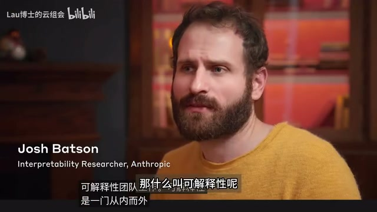
00:00:06–00:00:09 · 画面 003假设你现在要预测北京的房价，你手头上有一堆数据，比如房间数量、犯罪率、学区质量等等。如果你用一个简单的线性回归模型，模型会给你一个清晰的公式，比如房价等于 0.5 乘以房间数减 0.3 乘犯罪率。这非常直观对吧，每个系数都有明确的物理含义。
00:00:09–00:00:10 · 画面 004
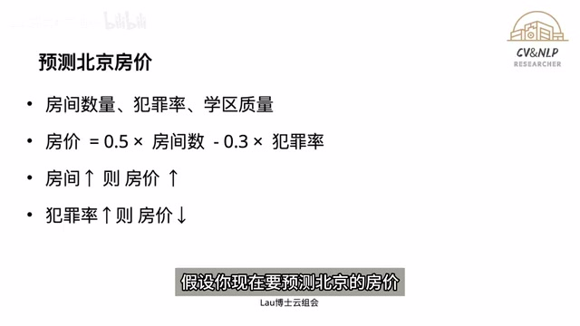
00:00:09–00:00:10 · 画面 00400:00:10–00:00:11 · 画面 005
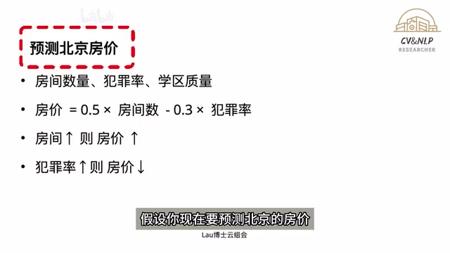
00:00:10–00:00:11 · 画面 00500:00:11–00:00:15 · 画面 006
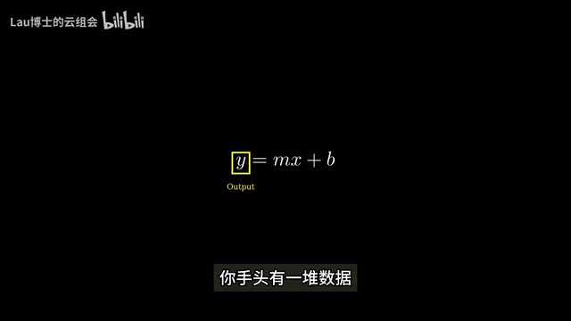
00:00:11–00:00:15 · 画面 00600:00:15–00:00:17 · 画面 007
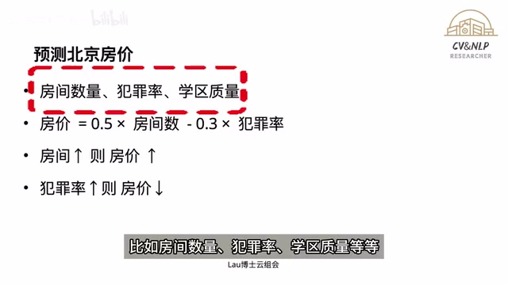
00:00:15–00:00:17 · 画面 00700:00:17–00:00:18 · 画面 008
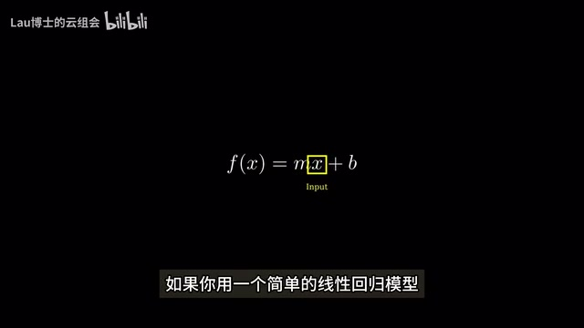
00:00:17–00:00:18 · 画面 00800:00:18–00:00:19 · 画面 009
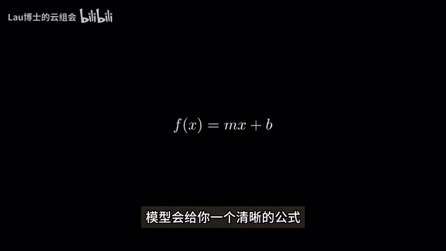
00:00:18–00:00:19 · 画面 00900:00:19–00:00:22 · 画面 010
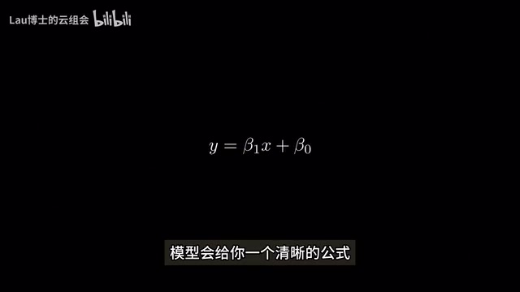
00:00:19–00:00:22 · 画面 01000:00:22–00:00:26 · 画面 011
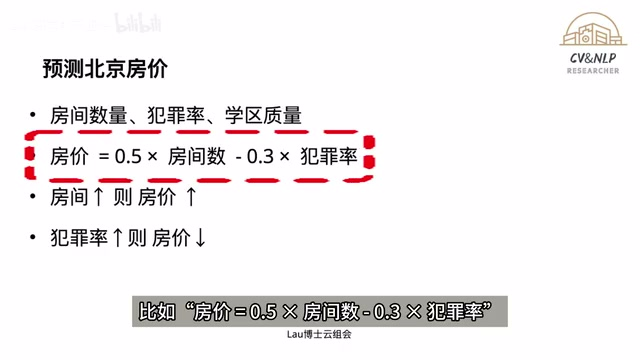
00:00:22–00:00:26 · 画面 01100:00:26–00:00:30 · 画面 012
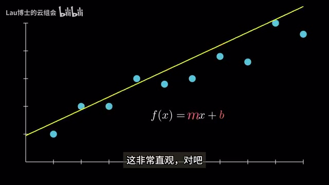
00:00:26–00:00:30 · 画面 01200:00:30–00:00:33 · 画面 013
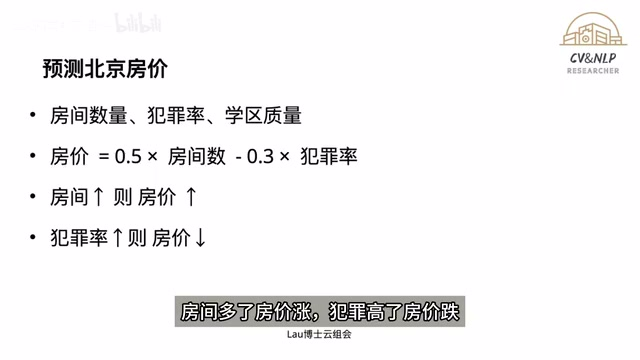
00:00:30–00:00:33 · 画面 013房间多了房价涨，犯罪高了房价跌。我们完全清楚模型是依据什么逻辑做出的判断，这在学术上就叫可解释。但把视角拉回到现在，面对参数量上千亿的超大语言模型，比如 Claude 或者是 GPT-5，情况就完全变了。你问他谁是篮球之神，他秒回乔丹。但如果你追问他，请问是你内部的哪一个神经元决定了乔丹这个词？
00:00:33–00:00:34 · 画面 014
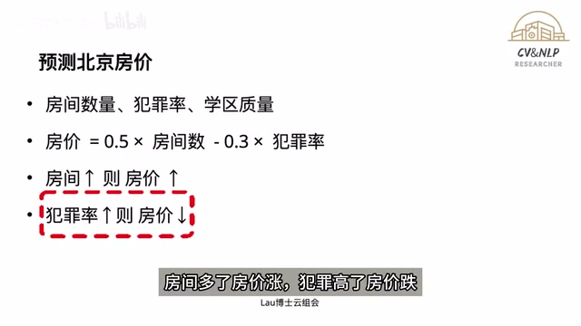
00:00:33–00:00:34 · 画面 01400:00:34–00:00:38 · 画面 015
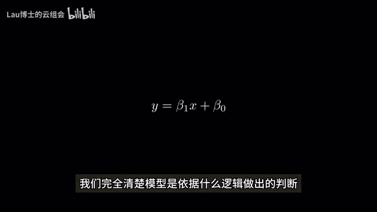
00:00:34–00:00:38 · 画面 01500:00:38–00:00:42 · 画面 016
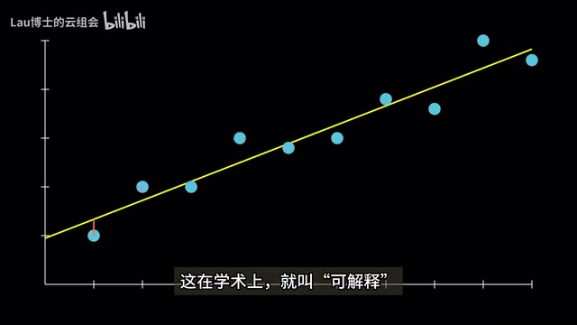
00:00:38–00:00:42 · 画面 01600:00:42–00:00:46 · 画面 017
00:00:42–00:00:46 · 画面 01700:00:46–00:00:48 · 画面 018
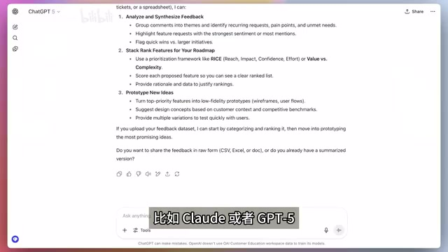
00:00:46–00:00:48 · 画面 01800:00:48–00:00:52 · 画面 019
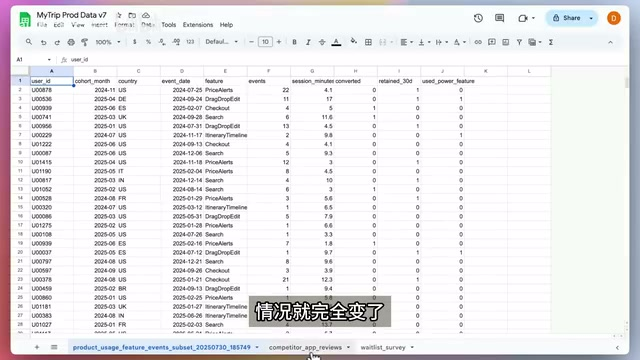
00:00:48–00:00:52 · 画面 01900:00:52–00:00:56 · 画面 020
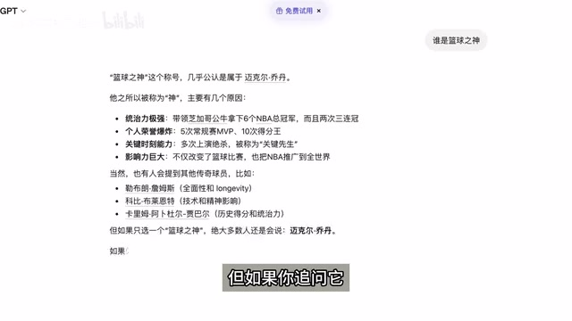
00:00:52–00:00:56 · 画面 02000:00:56–00:00:59 · 画面 021
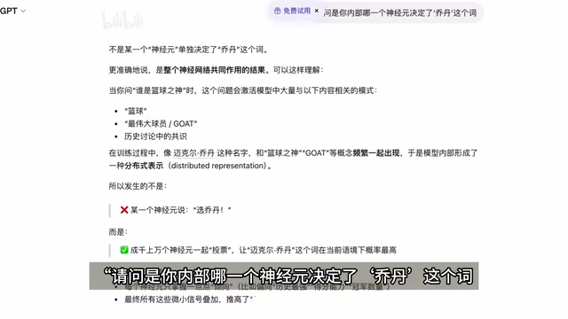
00:00:56–00:00:59 · 画面 021抱歉 ，没人能答上来。大模型作为一个黑盒，提示词进去 ，答案出来，中间究竟逻辑推理在起作用，还是单纯的概率猜测，甚至是它在刻意隐瞒什么，我们一无所知。这就是不可解释。自想一下，如果未来 AI 要介入医疗诊断、法律判决，甚至更关键的领域，我们怎么能容忍它是个黑盒？
00:00:59–00:01:02 · 画面 022
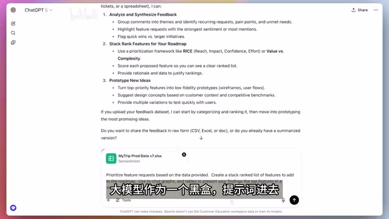
00:00:59–00:01:02 · 画面 02200:01:02–00:01:03 · 画面 023
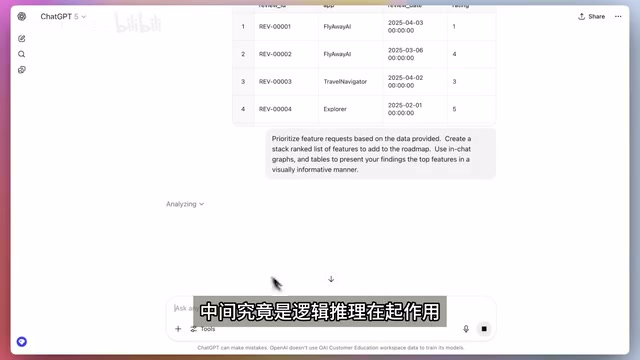
00:01:02–00:01:03 · 画面 02300:01:03–00:01:07 · 画面 024
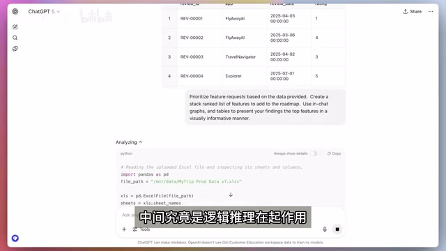
00:01:03–00:01:07 · 画面 02400:01:07–00:01:11 · 画面 025
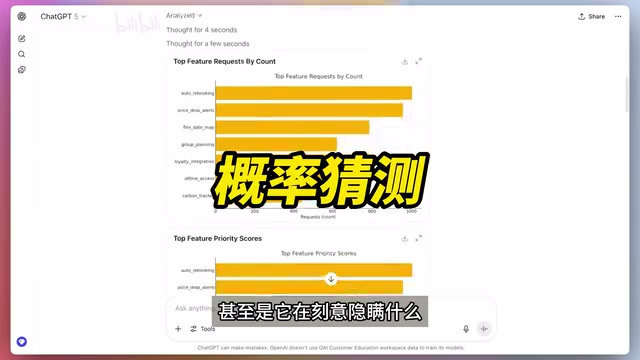
00:01:07–00:01:11 · 画面 02500:01:11–00:01:15 · 画面 026
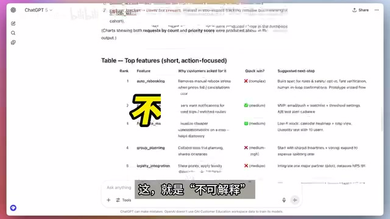
00:01:11–00:01:15 · 画面 02600:01:15–00:01:19 · 画面 027
00:01:15–00:01:19 · 画面 02700:01:19–00:01:22 · 画面 028
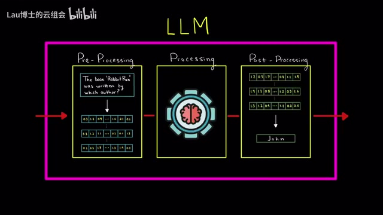
00:01:19–00:01:22 · 画面 028放眼全球，要说谁在 AI 可解释性这块投入最深最系统，那绝对是 Anthropic 这家公司。没错，就是研发出当前最强推理模型的 Claude 那家公司。今天六博士就结合他们最新的研究脉络，对大模型做一次脑科手术。
00:01:22–00:01:24 · 画面 029
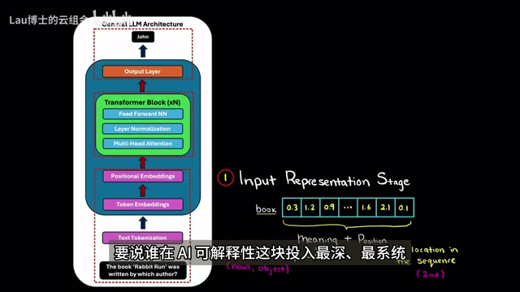
00:01:22–00:01:24 · 画面 02900:01:24–00:01:26 · 画面 030
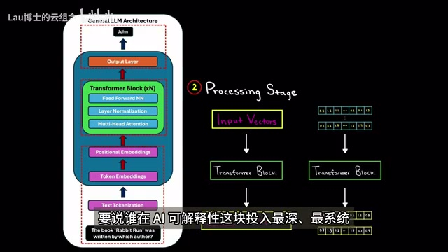
00:01:24–00:01:26 · 画面 03000:01:26–00:01:30 · 画面 031
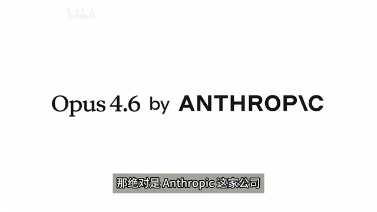
00:01:26–00:01:30 · 画面 03100:01:30–00:01:31 · 画面 032
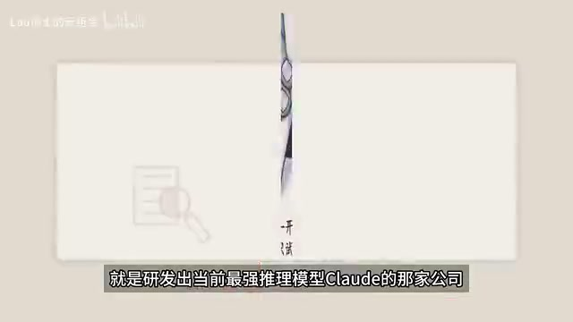
00:01:30–00:01:31 · 画面 03200:01:31–00:01:33 · 画面 033
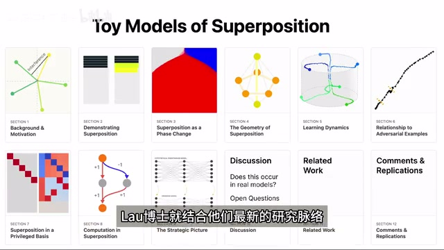
00:01:31–00:01:33 · 画面 03300:01:33–00:01:37 · 画面 034
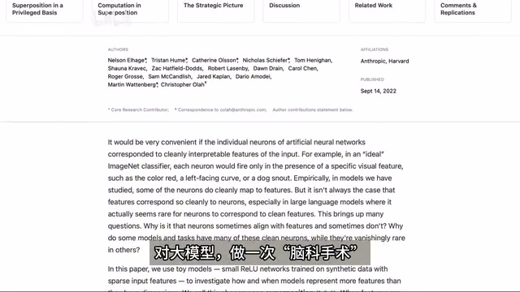
00:01:33–00:01:37 · 画面 03400:01:37–00:01:39 · 画面 035
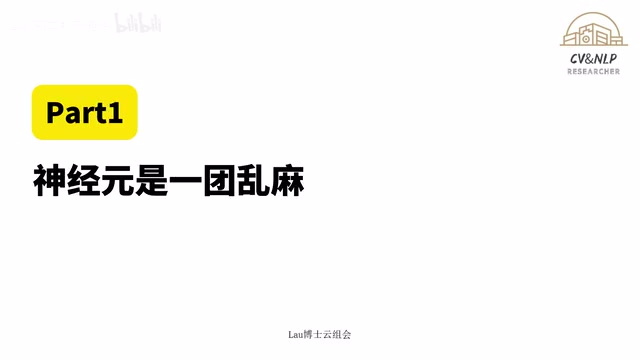
00:01:37–00:01:39 · 画面 035故事得从 2022 年说起。那时候研究人员心里有个简单的猜测，神经网络里的每个神经元专门负责一个概念，比如啊，这个神经元亮了就代表猫，那个亮了就代表狗。但 Anthropic 团队发现，大模型里的神经元几乎是多义的。你盯着一个神经元看，它可能同时对猫、法律条文甚至圣诞节都有反应，你根本搞不懂它到底代表什么。
00:01:39–00:01:40 · 画面 036
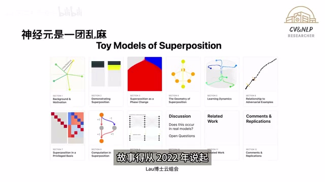
00:01:39–00:01:40 · 画面 03600:01:40–00:01:44 · 画面 037
00:01:40–00:01:44 · 画面 03700:01:44–00:01:46 · 画面 038
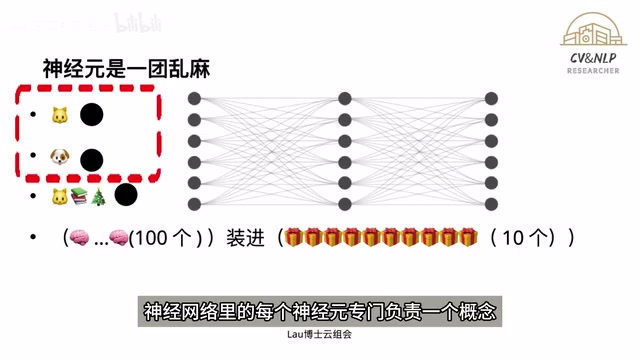
00:01:44–00:01:46 · 画面 03800:01:46–00:01:49 · 画面 039
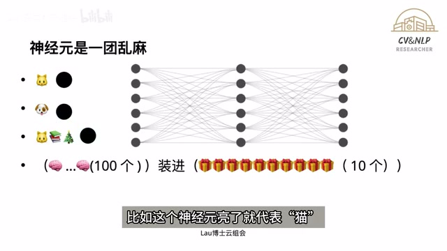
00:01:46–00:01:49 · 画面 03900:01:49–00:01:53 · 画面 040
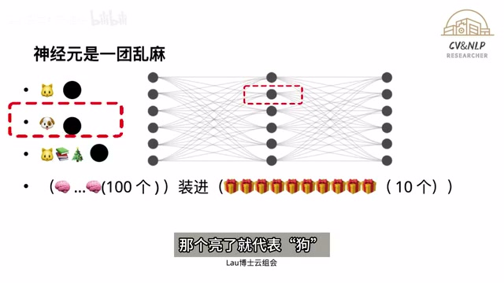
00:01:49–00:01:53 · 画面 04000:01:53–00:01:54 · 画面 041
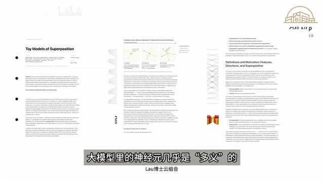
00:01:53–00:01:54 · 画面 04100:01:54–00:01:57 · 画面 042
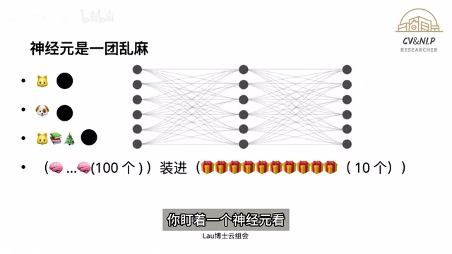
00:01:54–00:01:57 · 画面 04200:01:57–00:02:01 · 画面 043
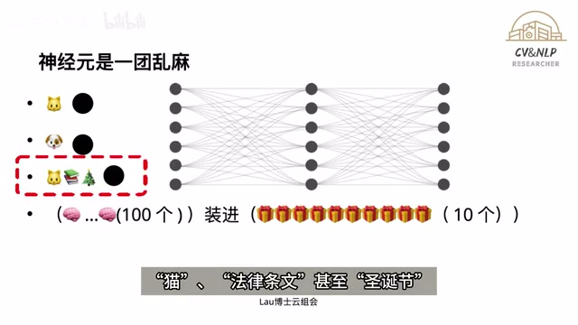
00:01:57–00:02:01 · 画面 04300:02:01–00:02:04 · 画面 044
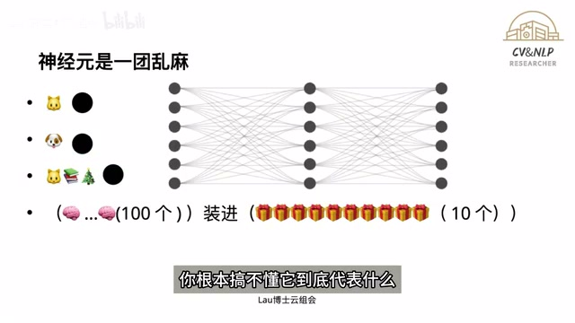
00:02:01–00:02:04 · 画面 044这种现象称为叠加研究团队通过小型网络实验发现当特征比较稀疏时模型会把远超自身维度数量的概念压缩存储到同一组神经元理这就好比你只有 10 个盒子却要装 100 个概念模型只能把它们像几盒编码一样叠在一起这么做的代价就是信号会串扰这也解释了为什么模型容易被对抗样本欺骗因为内部的特征本来就是叠在一起的微小的噪声咬动就足以把一个特征的信号
00:02:04–00:02:08 · 画面 045
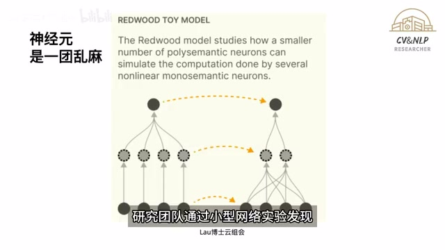
00:02:04–00:02:08 · 画面 04500:02:08–00:02:10 · 画面 046
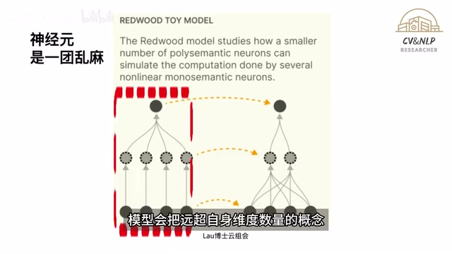
00:02:08–00:02:10 · 画面 04600:02:10–00:02:11 · 画面 047
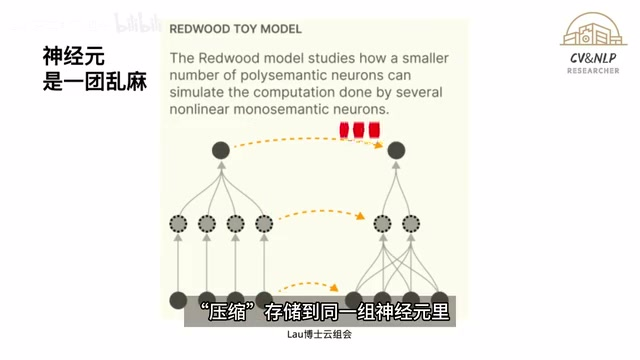
00:02:10–00:02:11 · 画面 04700:02:11–00:02:14 · 画面 048
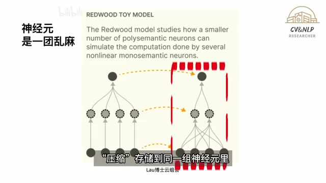
00:02:11–00:02:14 · 画面 04800:02:14–00:02:16 · 画面 049
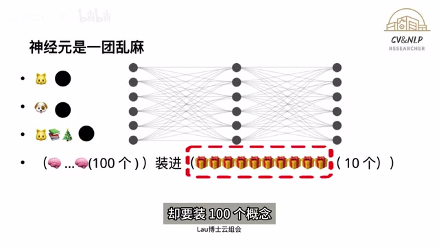
00:02:14–00:02:16 · 画面 04900:02:16–00:02:19 · 画面 050
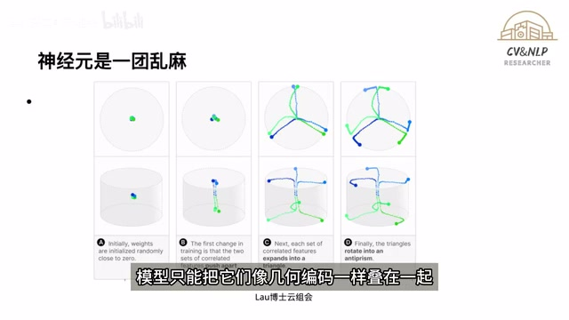
00:02:16–00:02:19 · 画面 05000:02:19–00:02:24 · 画面 051
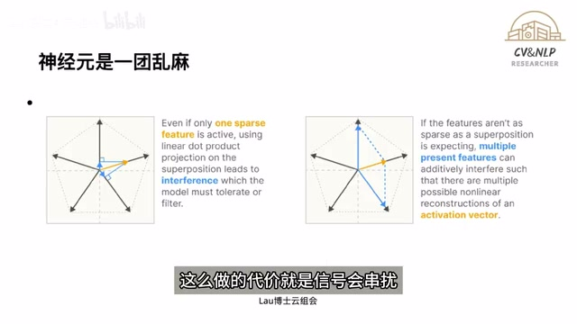
00:02:19–00:02:24 · 画面 05100:02:24–00:02:26 · 画面 052
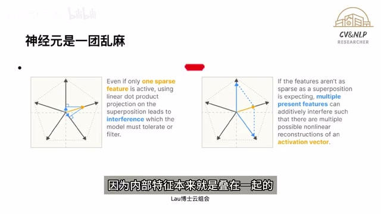
00:02:24–00:02:26 · 画面 05200:02:26–00:02:30 · 画面 053
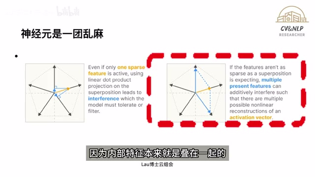
00:02:26–00:02:30 · 画面 05300:02:30–00:02:32 · 画面 054
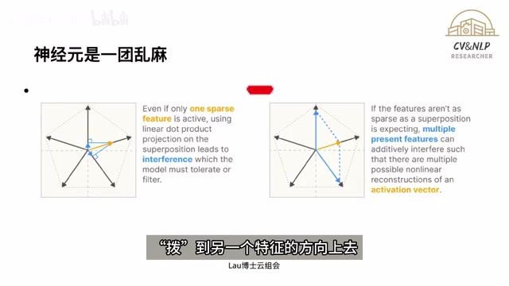
00:02:30–00:02:32 · 画面 054拨到另一个特征的方向上去所以第一阶段的研究结论很残酷光盯着单个神经元看是没用的必须找到另一种方法把这些叠在一起的特征强行拆解开来
00:02:32–00:02:33 · 画面 055
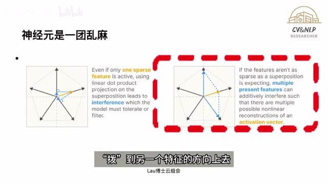
00:02:32–00:02:33 · 画面 05500:02:33–00:02:38 · 画面 056
00:02:33–00:02:38 · 画面 05600:02:38–00:02:42 · 画面 057
00:02:38–00:02:42 · 画面 05700:02:42–00:02:44 · 画面 058
00:02:42–00:02:44 · 画面 05800:02:44–00:02:45 · 画面 059
00:02:44–00:02:45 · 画面 059怎么猜?2024 年 5 月 Anthropic 团队抛出了一个重磅成果核心方法叫做稀疏自编码器简称 SAE 技术原理其实不难理解就是模型的中间层接一个特征分解器利用这个分解器我们就能把叠在同一个神经元上互相独立的特征拆分出来那么这些特征具体到什么程度?举几个例子第一有专门对应金门大桥这个概念的特征只要你人为的激活它模型聊什么都往金门大桥上扯
00:02:45–00:02:49 · 画面 060
00:02:45–00:02:49 · 画面 06000:02:49–00:02:53 · 画面 061
00:02:49–00:02:53 · 画面 06100:02:53–00:02:56 · 画面 062
00:02:53–00:02:56 · 画面 06200:02:56–00:02:57 · 画面 063
00:02:56–00:02:57 · 画面 06300:02:57–00:03:00 · 画面 064
00:02:57–00:03:00 · 画面 06400:03:00–00:03:03 · 画面 065
00:03:00–00:03:03 · 画面 06500:03:03–00:03:06 · 画面 066
00:03:03–00:03:06 · 画面 06600:03:06–00:03:12 · 画面 067
00:03:06–00:03:12 · 画面 06700:03:12–00:03:13 · 画面 068
00:03:12–00:03:13 · 画面 06800:03:13–00:03:14 · 画面 069
00:03:13–00:03:14 · 画面 069第二 ，发现了跨语言的特征。同一个特征，当你用英文说 French，中文说法国，又或者是用日语等其他语言来说，它都会亮。这意味着模型的内部真的形成了某种超越语言的概念表示。
00:03:14–00:03:18 · 画面 070
00:03:14–00:03:18 · 画面 07000:03:18–00:03:19 · 画面 071
00:03:18–00:03:19 · 画面 07100:03:19–00:03:22 · 画面 072
00:03:19–00:03:22 · 画面 07200:03:22–00:03:27 · 画面 073
00:03:22–00:03:27 · 画面 073第三，甚至存在跨模态特征。给他看金门大桥的照片和写一句 Golden Gate Bridge，激活的是同一个内部表示。是不是非常符合人类直觉？这下我们终于搞懂了一些模型内部的机制，就像你终于知道为什么要给我们点赞投币，因为确实学到了东西了。但最受关注的是那些和 AI 安全直接相关的特征。
00:03:27–00:03:29 · 画面 074
00:03:27–00:03:29 · 画面 07400:03:29–00:03:31 · 画面 075
00:03:29–00:03:31 · 画面 07500:03:31–00:03:34 · 画面 076
00:03:31–00:03:34 · 画面 07600:03:34–00:03:38 · 画面 077
00:03:34–00:03:38 · 画面 07700:03:38–00:03:42 · 画面 078
00:03:38–00:03:42 · 画面 07800:03:42–00:03:44 · 画面 079
00:03:42–00:03:44 · 画面 07900:03:44–00:03:45 · 画面 080
00:03:44–00:03:45 · 画面 08000:03:45–00:03:48 · 画面 081
00:03:45–00:03:48 · 画面 08100:03:48–00:03:51 · 画面 082
00:03:48–00:03:51 · 画面 082他们找到了应对欺骗、说谎、生化武器等概念的特征。当然，模型有抢劫的概念不代表他会去抢银行，但这意味着模型知道这些概念，而且这些概念在模型的内部是有明确的坐标的。
00:03:51–00:03:55 · 画面 083
00:03:51–00:03:55 · 画面 08300:03:55–00:04:00 · 画面 084
00:03:55–00:04:00 · 画面 08400:04:00–00:04:01 · 画面 085
00:04:00–00:04:01 · 画面 08500:04:01–00:04:04 · 画面 086
00:04:01–00:04:04 · 画面 086而且从刚刚金门大桥的例子中可以看出，只要激活某个特征，模型无论了什么都能扯到这个特征上面去。这项研究虽然标志着人类第一次实现了对大模型内部概念的精确定位和可控干预，但也意味着假设有人利用大模型去做一些别有用心的引导，将变得防不胜防。不知道屏幕前的各位专家你怎么看呢？
00:04:04–00:04:11 · 画面 087
00:04:04–00:04:11 · 画面 08700:04:11–00:04:13 · 画面 088
00:04:11–00:04:13 · 画面 08800:04:13–00:04:17 · 画面 089
00:04:13–00:04:17 · 画面 08900:04:17–00:04:18 · 画面 090
00:04:17–00:04:18 · 画面 09000:04:18–00:04:23 · 画面 091
00:04:18–00:04:23 · 画面 09100:04:23–00:04:26 · 画面 092
00:04:23–00:04:26 · 画面 09200:04:26–00:04:27 · 画面 093
00:04:26–00:04:27 · 画面 093OK ，知道了有哪些特征还不够，你得知道它们怎么互动。就像你知道了汽车有发动机有轮胎，但不知道它们怎么传动。
00:04:27–00:04:31 · 画面 094
00:04:27–00:04:31 · 画面 09400:04:31–00:04:35 · 画面 095
00:04:31–00:04:35 · 画面 09500:04:35–00:04:39 · 画面 096
00:04:35–00:04:39 · 画面 0962025 年 3 月研究团队同时发出了两篇论文解决了这个问题核心是搞了一个叫跨层转码器的东西通过这个转码器你能看清每个特征是怎么被激活它又去影响了哪些下游特征并最终形成输出的利用归因图技术研究团队把这个过程画了出来就像一张思维电路图比如问迈克和乔丹从事什么运动归因图会展示 Michael 和 Jordan 激活了人物特征 Sports 激活了运动特征
00:04:39–00:04:41 · 画面 097
00:04:39–00:04:41 · 画面 09700:04:41–00:04:45 · 画面 098
00:04:41–00:04:45 · 画面 09800:04:45–00:04:49 · 画面 099
00:04:45–00:04:49 · 画面 09900:04:49–00:04:51 · 画面 100
00:04:49–00:04:51 · 画面 10000:04:51–00:04:52 · 画面 101
00:04:51–00:04:52 · 画面 10100:04:52–00:04:57 · 画面 102
00:04:52–00:04:57 · 画面 10200:04:57–00:04:59 · 画面 103
00:04:57–00:04:59 · 画面 10300:04:59–00:05:01 · 画面 104
00:04:59–00:05:01 · 画面 10400:05:01–00:05:03 · 画面 105
00:05:01–00:05:03 · 画面 10500:05:03–00:05:05 · 画面 106
00:05:03–00:05:05 · 画面 106中间成交会共同激活了篮球最后输出 Basketball 这不是事后合理化而是时时追踪的信号流关掉中间节点输出真的会变借助这个方法他们在自家的大模型 Claude 上面发现五个极其炸裂的现象
00:05:05–00:05:07 · 画面 107
00:05:05–00:05:07 · 画面 10700:05:07–00:05:09 · 画面 108
00:05:07–00:05:09 · 画面 10800:05:09–00:05:13 · 画面 109
00:05:09–00:05:13 · 画面 10900:05:13–00:05:16 · 画面 110
00:05:13–00:05:16 · 画面 11000:05:16–00:05:21 · 画面 111
00:05:16–00:05:21 · 画面 11100:05:21–00:05:22 · 画面 112
00:05:21–00:05:22 · 画面 11200:05:22–00:05:23 · 画面 113
00:05:22–00:05:23 · 画面 113和上一节我们的发现一致，无论是输入的是中文、日文还是英文，在模型的中间层被激活的核心特征几乎是同一批。不同的语言的处理路径在中间层汇聚到同一套和语言无关的概念空间里。所以 Claude 思考的时候用的并不是任何人类的语言，而是一种概念编码。
00:05:23–00:05:25 · 画面 114
00:05:23–00:05:25 · 画面 11400:05:25–00:05:29 · 画面 115
00:05:25–00:05:29 · 画面 11500:05:29–00:05:30 · 画面 116
00:05:29–00:05:30 · 画面 11600:05:30–00:05:34 · 画面 117
00:05:30–00:05:34 · 画面 11700:05:34–00:05:37 · 画面 118
00:05:34–00:05:37 · 画面 11800:05:37–00:05:41 · 画面 119
00:05:37–00:05:41 · 画面 11900:05:41–00:05:43 · 画面 120
00:05:41–00:05:43 · 画面 12000:05:43–00:05:44 · 画面 121
00:05:43–00:05:44 · 画面 121Transformer 按理说是走一步看一步，但归因图显示在让 Claude 写押韵诗时，模型在生成一行诗的第一个词之前就已经在内部激活了那行诗末尾的押韵词，说明它是先想好韵脚再倒推前面的词，就像你虽然还没看完视频，但已经选择关注云组会。
00:05:44–00:05:48 · 画面 122
00:05:44–00:05:48 · 画面 12200:05:48–00:05:49 · 画面 123
00:05:48–00:05:49 · 画面 12300:05:49–00:05:50 · 画面 124
00:05:49–00:05:50 · 画面 12400:05:50–00:05:55 · 画面 125
00:05:50–00:05:55 · 画面 12500:05:55–00:05:56 · 画面 126
00:05:55–00:05:56 · 画面 12600:05:56–00:06:00 · 画面 127
00:05:56–00:06:00 · 画面 12700:06:00–00:06:03 · 画面 128
00:06:00–00:06:03 · 画面 12800:06:03–00:06:04 · 画面 129
00:06:03–00:06:04 · 画面 129当模型一本正经胡说八道时，归因图显示内部有两股力量在拉扯，一股是逻辑推理，一股是迎合用户，有时候迎合赢了，模型就先定结论再编推理过程，这就是假的思维链。第四，Claude 做数学的方式和人类完全不同。
00:06:04–00:06:09 · 画面 130
00:06:04–00:06:09 · 画面 13000:06:09–00:06:11 · 画面 131
00:06:09–00:06:11 · 画面 13100:06:11–00:06:14 · 画面 132
00:06:11–00:06:14 · 画面 13200:06:14–00:06:16 · 画面 133
00:06:14–00:06:16 · 画面 13300:06:16–00:06:17 · 画面 134
00:06:16–00:06:17 · 画面 13400:06:17–00:06:22 · 画面 135
00:06:17–00:06:22 · 画面 135它不是列竖式，而是先做一个模糊的量级估算，然后单独精确计算个位数，最后拼起来，这也解释了为什么大模型在简单的算术上偶尔会翻车。第五，多步推理不需要思维链也能在内部完成，在简单的医疗的诊断推理中，模型在单次前向传播中就完成了多步推理，这说明模型内部的推理能力比我们从外部观察到的要更强。
00:06:22–00:06:24 · 画面 136
00:06:22–00:06:24 · 画面 13600:06:24–00:06:30 · 画面 137
00:06:24–00:06:30 · 画面 13700:06:30–00:06:32 · 画面 138
00:06:30–00:06:32 · 画面 13800:06:32–00:06:33 · 画面 139
00:06:32–00:06:33 · 画面 13900:06:33–00:06:37 · 画面 140
00:06:33–00:06:37 · 画面 14000:06:37–00:06:38 · 画面 141
00:06:37–00:06:38 · 画面 14100:06:38–00:06:40 · 画面 142
00:06:38–00:06:40 · 画面 14200:06:40–00:06:44 · 画面 143
00:06:40–00:06:44 · 画面 14300:06:44–00:06:45 · 画面 144
00:06:44–00:06:45 · 画面 14400:06:45–00:06:46 · 画面 145
00:06:45–00:06:46 · 画面 145Anthropic 团队的研究并未停止，就在几个月前，他们开启了一个更大胆的计划，让 AI 成为自己的解读者，构建一套自我解释的高效体系。而在这个深入黑盒的过程中，一个令人屏息的发现浮出水面，他们似乎找到了控制 AI 人格的物理开关。这不仅仅是一个技术节点，它让我们不得不思考，当人类真正掌握了机器灵魂的控制权时，我们与硅基智能的关系将走向何方。
00:06:46–00:06:56 · 画面 146
00:06:46–00:06:56 · 画面 14600:06:56–00:07:03 · 画面 147
00:06:56–00:07:03 · 画面 14700:07:03–00:07:04 · 画面 148
00:07:03–00:07:04 · 画面 14800:07:04–00:07:05 · 画面 149
00:07:04–00:07:05 · 画面 14900:07:05–00:07:15 · 画面 150
00:07:05–00:07:15 · 画面 15000:07:15–00:07:18 · 画面 151
00:07:15–00:07:18 · 画面 151如果你对这个话题感兴趣，点赞过一万六，博士就立即开杆加班，给大家出关于 AI 人格的解读视频。OK，以上就是本期云组会的全部内容，如果你对 AI 感兴趣或者想看更多硬核的解读，欢迎关注我们，成为云组会的一员。
00:07:18–00:07:19 · 画面 152
00:07:18–00:07:19 · 画面 15200:07:19–00:07:23 · 画面 153
00:07:19–00:07:23 · 画面 15300:07:23–00:07:27 · 画面 154
00:07:23–00:07:27 · 画面 15400:07:27–00:07:31 · 画面 155
00:07:27–00:07:31 · 画面 15500:07:31–00:07:32 · 画面 156
00:07:31–00:07:32 · 画面 15600:07:32–00:07:32 · 画面 157
00:07:32–00:07:32 · 画面 157转写与来源说明 · 0 个自动复核提示
保留 22 个原始语音片段，0 个片段触发自动复核提示。提示仅用于定位可能的术语、重复或识别问题，不等于已确认错误。
讲解画面为源视频截图（640×360），不是可编辑 PPT 文件。全片按每秒 2 帧扫描内容变化，逐步展开页保留；连续动画保留代表画面。清晰度受源视频限制。
原视频：paper/合集_2026-10-16_论文精读/【硬核科普】大模型输出答案前，脑子里到底在算什么？.mp4
SHA-256：e0f2516f4e9cf0d323beac0f5cbbf51177248db08a67f2c5fda4e0a547ea09e0
全文按视频语音与画面制作。原论文可从上方链接下载；完整资料包保留全文、原始逐字稿、字幕和校对记录。